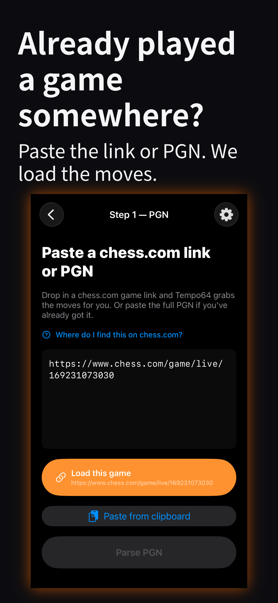

What's new in v3.0
Tempo64 now has a full puzzle trainer. Solve the Puzzle of the Day every morning, or tap Play a Random Puzzle for an endless queue of tactics pulled from Lichess's database of 4+ million positions. Get it right and the next puzzle is harder. Get it wrong and it dials back. Your Elo rating updates after every puzzle (K=32, same math as Lichess). Solve a position you like? Tap Make a Video — the whole thing turns into a Tempo64 short on the spot.
What it does
Tempo64 takes any chess game — played in-app, pasted as PGN, or imported from a chess.com link — and turns it into a vertical 9:16 short ready to post on TikTok, Instagram, or YouTube. Every move plays a satisfying thud. Captures get a punchy bite. Checks land with a dramatic fahh. Checkmate hits with a ringing tail. Stockfish grades every move — brilliant moments and blunders each get their own badge and stinger in your video.
See it in action



Features
-
Puzzle trainer — new in v3.0
Puzzle of the Day plus an endless queue of tactics from Lichess's 4M+ position database. Adaptive difficulty adjusts to your level. Your Elo rating updates after every solve. Puzzles you've already seen are filtered out automatically when you're online.
-
Play right in the app
Vs a bot (Easy → Brutal), vs a friend via Game Center, or pass the phone for two humans on one device. Render the moment the king falls.
-
Built for TikTok, Instagram, and YouTube
1080×1920 H.264 + AAC. Post the export straight to TikTok, Instagram Reels, or YouTube Shorts.
-
Cinematic capture cutscenes
Short dramatic clips splice in on qualifying captures, with their own audio and a film-style fade-in. Sparse by design — a scrappy game gets a few, a positional one gets none.
-
Face-cam & voice commentary
Record a 30-second face-cam reaction on any move, or narrate over the board with voice clips and a synced waveform card.
-
Engine-graded moves
Stockfish on-device. Live eval bar painted into the export, with Brilliant / Mistake / Blunder badges and matching stingers.
-
Climax teaser intro
Open with a 5-second hook — a face-cam clip, the game's most dramatic moment, or a cinematic cutscene your game qualifies for.
-
Your games, saved
Save any in-app game for later, then render when the caption hits you. Past renders stick around so you can reshare anytime.
-
Background rendering
Renders survive switching apps. A notification fires when your video is ready.
How it works
- Play, solve, paste, or import. Solve a puzzle, play a game in-app (bot, online, or pass-and-play), paste a PGN from Chess.com or Lichess, or drop in a chess.com URL and we fetch the moves.
- Review the game. Walk every ply with attack highlights. Tap to trim the opening or the tail.
- Customize. Theme, sounds, pace, climax teaser, cinematic cutscenes. Record face-cam or voice commentary on any move.
- Render. Save to Photos or share to TikTok, Instagram, or YouTube.
Privacy
Video export happens entirely on your device. Your PGN, your generated videos, your audio mix, your face-cam and voice recordings — all local. Online play uses Apple's Game Center to sync moves between you and your friend. Puzzle progress syncs to a server so you never see the same position twice — no account required, just an anonymous device ID. We don't collect your games. We don't track you.
Support
Found a bug, have a feature request, or want to share what you made? email support and we'll take a look.